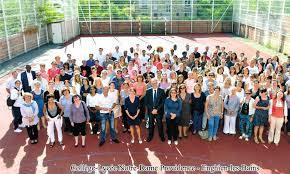
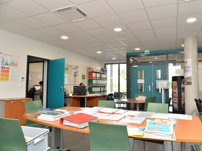
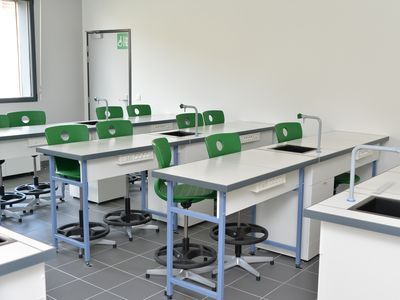

Collège
Au collège, dès la 6ème nous insistons sur la qualité et l'environnement de nos étudiants afin de les accompagner tout au long de l'année.
Une équipe d'enseignants professionels et assidus est de mise, chaque matière a son professeur !
Un CDI est présent et les apprentissages info-documentaires dispensés dans celui-ci participent d'un développement de la culture informationnelle des élèves.
Les activités organisées portent sur différents axes : des apprentissages info-documentaires, l'éducation aux médias et à l'information, la promotion de la lecture et l'ouverture culturelle. Les ressources sont disponibles via différents supports : imprimé (livres de fictionm documentaires et revues), et numérique (plateformes sons, DVD et sites Web).
Ils sont majoritairement équipés de vidéoprojecteurs, d'enceintes, de tableaux blancs interactifs et de salles multimédia permettant de dispenser les formations info-com-documentaires.



 Lycée
Collège
Accueil
Lycée
Collège
Accueil